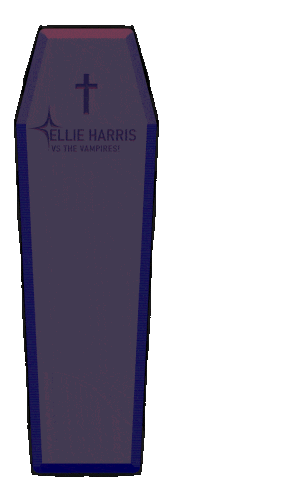
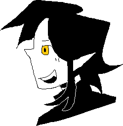

Vampire Study ^_^
Fear, nightmares, plague, mass hysteria. None of it is real are you stupid its obviously vampires. Oh blood is fluid and the earth is warm and moist? nuh uh.
General (Old Beliefs)

- Drowning
- Suicide/Violent Death
- Unbaptized
- Died while excommunicated
- Improper burial rites
- Bit by vampire in lifetime (becomes a vamp when they die)
- Tuberculosis/unknown diease (it's what vampirism is a common scapegoat for)
- Cursed by a priest
General (Old Beliefs)

- Undescomposed body
- Fresh blood on/in corpse
- Groaning after being staked
- New skin/nail growth
- Appears at noon
- Hungry... Will eat in their grave or ask the living for food
General (Old Beliefs)

- Pierce through chest/heart (they did this to garden variety murderers too)
- Burn the body
- Decapitation (and sometimes put the head near the legs)
- Rock/dirt down the jaw
- Vampirdzhiya/Vampire Hunter
- Wolf (first 40 days)
General (Old Beliefs)
- Upside down burial
- Under heavy stones